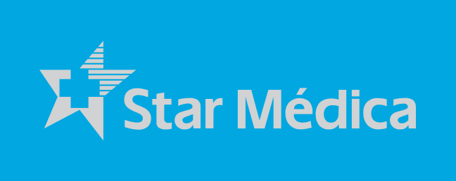
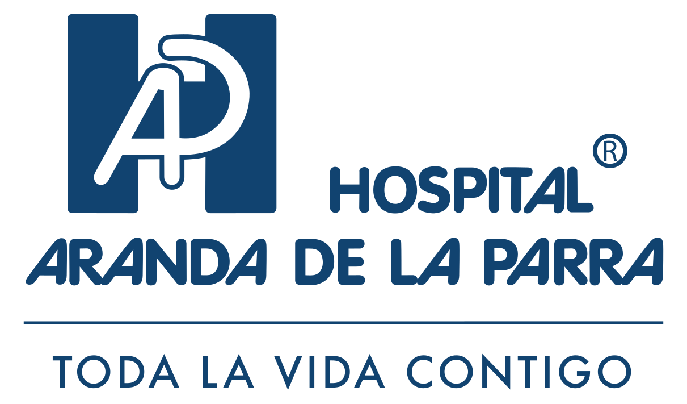
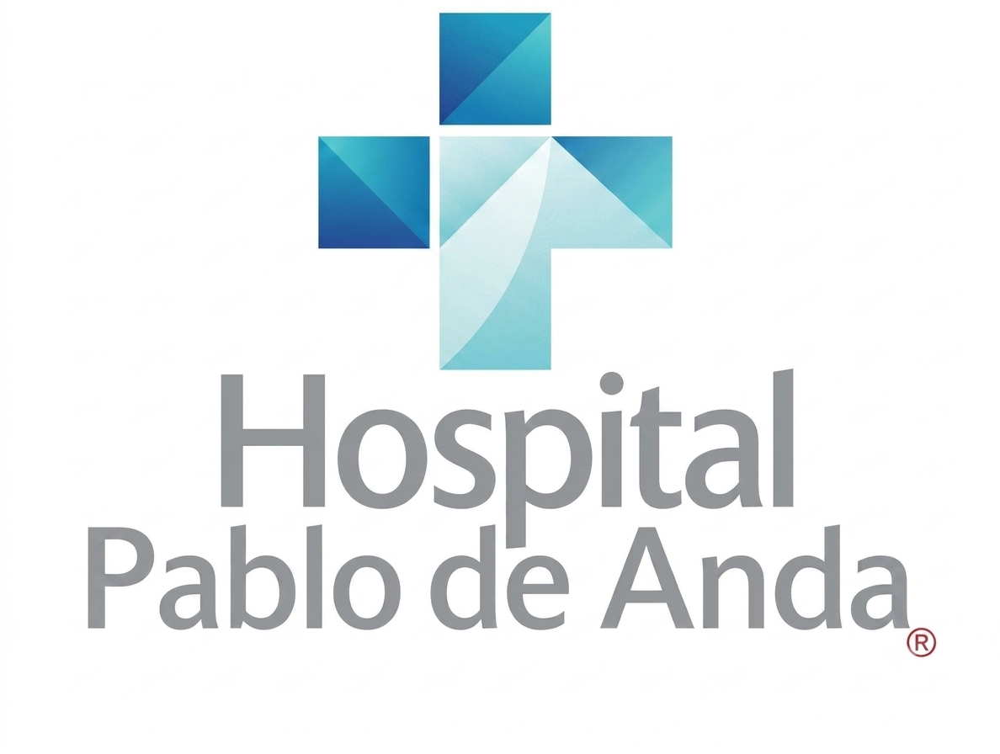
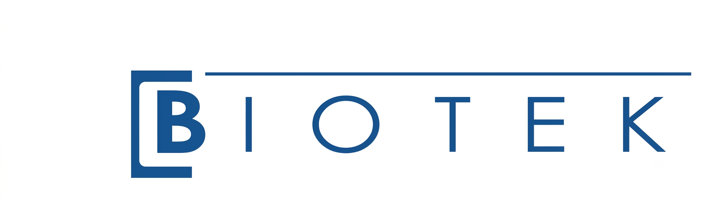
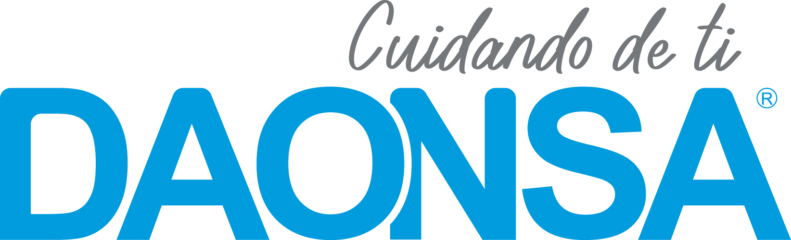

Asistencia técnica especializada en procedimientos ortopédicos y artroscópicos. Tu aliado estratégico dentro del quirófano — con disponibilidad inmediata, logística completa y el rigor que exige cada cirugía.
Asistencia técnica en artroscopia ortopédica y cirugía con implantes. Personal certificado, instrumental completo y disponibilidad inmediata.
Ver todas las especialidades




Cuéntanos qué necesitas y te respondemos en menos de 24 horas hábiles. Para urgencias quirúrgicas, contáctanos directo por WhatsApp.